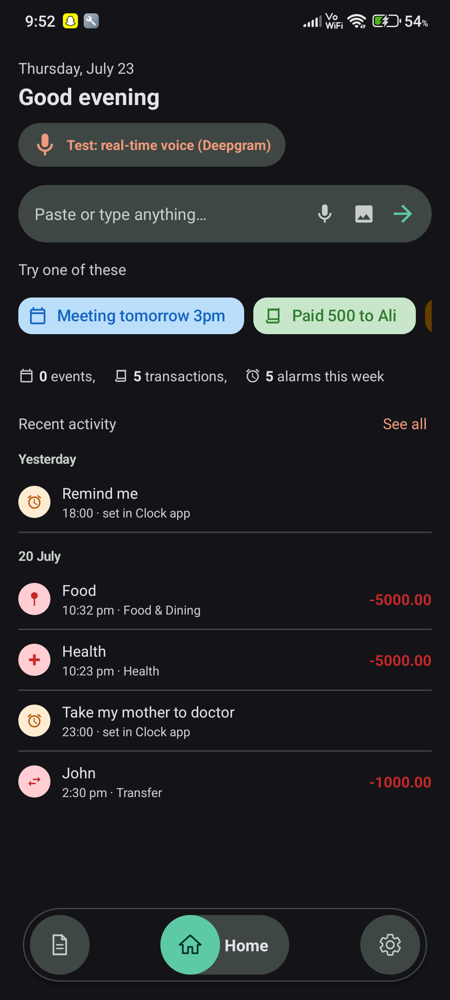
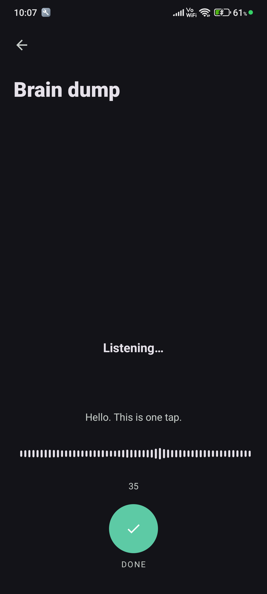
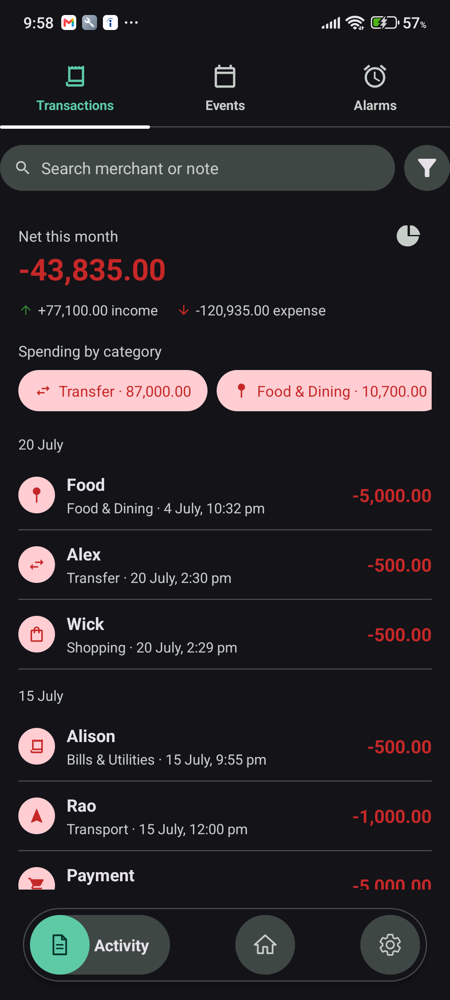
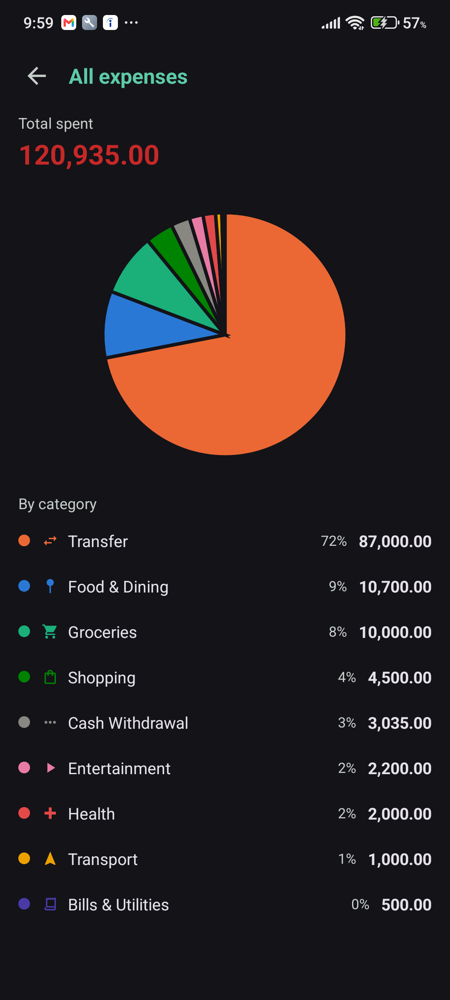
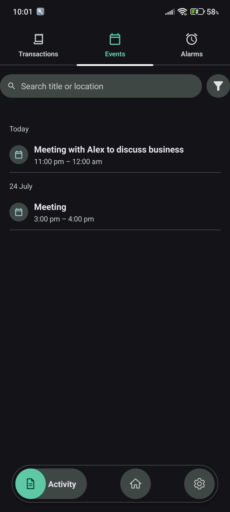
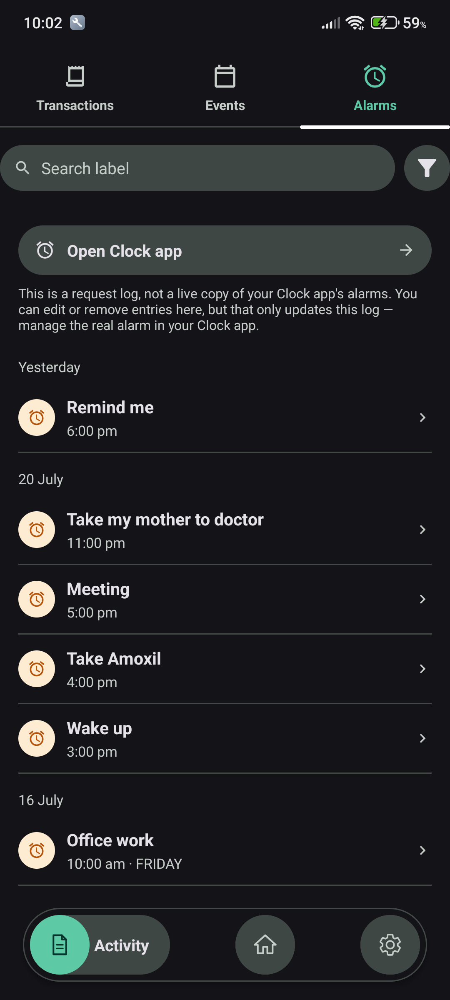
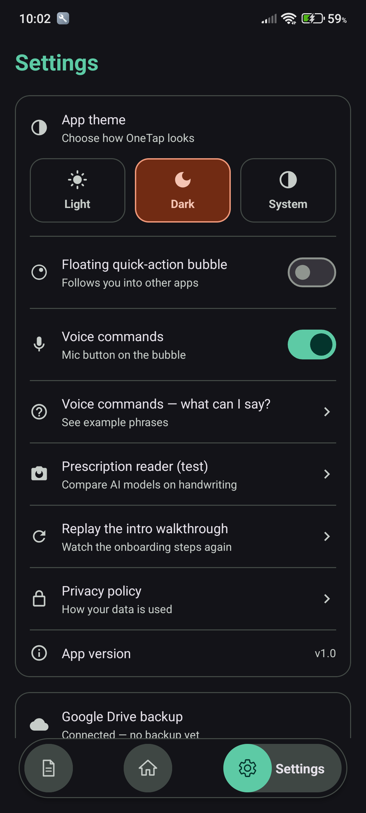
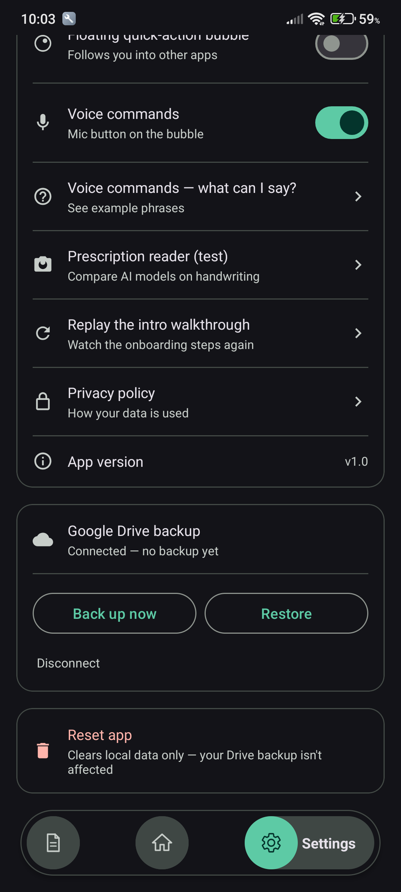
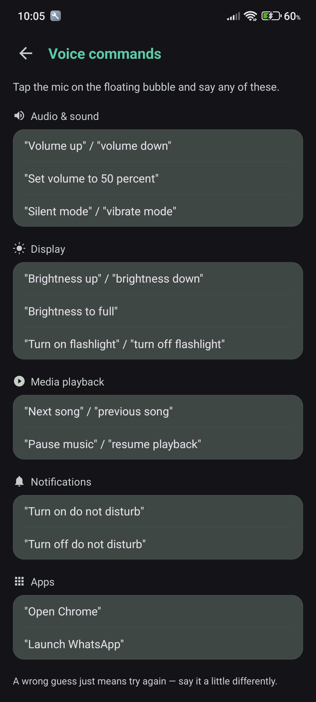

OneTap reads a message you paste, share, or speak, and turns it into a calendar event, alarm, or reminder — no typing dates and times in by hand. Review before anything's created, then confirm with one tap.
Six things most phones still make you do by hand — and how OneTap removes each one.
Real screens from the app — not mockups.
Home shows this week's spending, events, and alarms the moment you open it.

Tap and talk — a live transcript streams in as you go, no typing at all.

Net income and expenses for the month, broken down and ready to scan.

Every transaction sorted into a category automatically, charted for you.

Only the events OneTap created for you — never your whole calendar.

See what you've asked OneTap to set, with a shortcut to the Clock app.

Light, dark, or system theme, and every feature toggled on only if you want it.

One tap to back up to your own Google Drive, and restore just as easily.

Hands-free device control — volume, brightness, flashlight, and more.

← Swipe to see more →
Built to remove the tedious part of turning a message into something on your calendar.
Paste any message — a text, an email, a note to yourself — and OneTap figures out whether it's a meeting, a reminder, or something to cancel.
Share text straight from any app's share sheet and OneTap opens with it already filled in and interpreted.
Understands "tomorrow," "in 20 minutes," "next Friday," and recurring phrases like "every Monday" — and converts them to exact dates and times.
Nothing touches your calendar without your OK. Edit the title, date, time, duration, or location on an editable preview card first.
A small bubble that follows you across every app, so you can act on copied text without ever switching back to OneTap.
Tap the bubble's mic and say things like "brightness to 50%," "turn on the flashlight," or "silent mode" — fully hands-free device control.
A live, streaming transcript as you talk — "spent 500 on groceries" becomes a categorized expense without ever touching the keyboard.
Every transaction sorted into a category — food, transport, bills — with a spending breakdown chart so you always know where it went.
One tap backs up every transaction, event, and alarm to a private folder in your own Drive — restore it all again on any device, any time.
Drop in a message, share text from another app, or tap the bubble and say what you need scheduled.
It works out the title, date, time, duration, and whether it's an event, an alarm, or a cancellation.
Double-check the details on the preview card, tap confirm, and it's on your calendar or set as an alarm.
OneTap is still in development. Leave your email and you'll be the first to know when it's ready to try.
No spam, just a heads-up when OneTap is ready. Unsubscribe anytime.